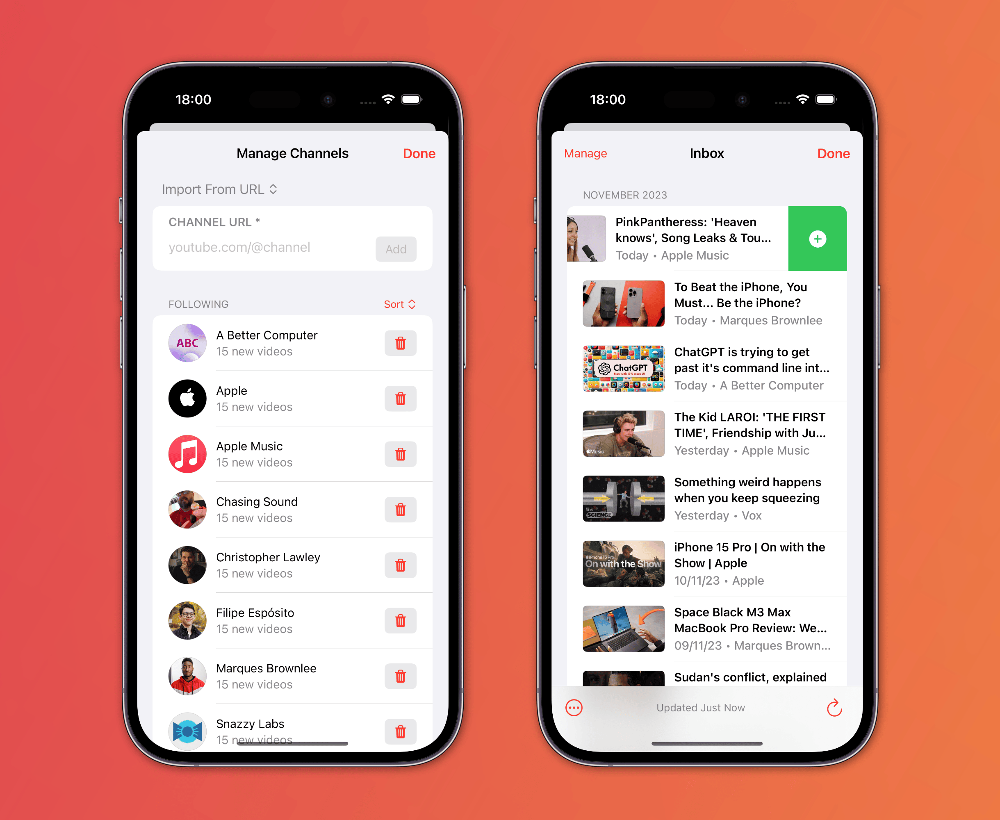
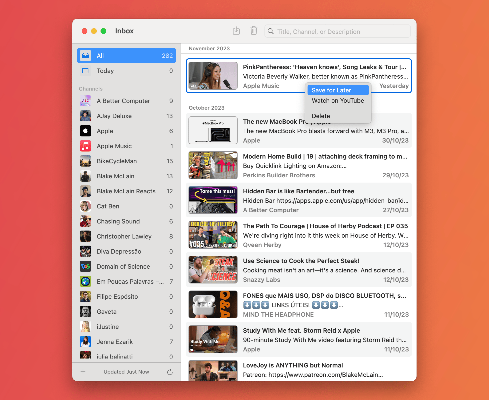
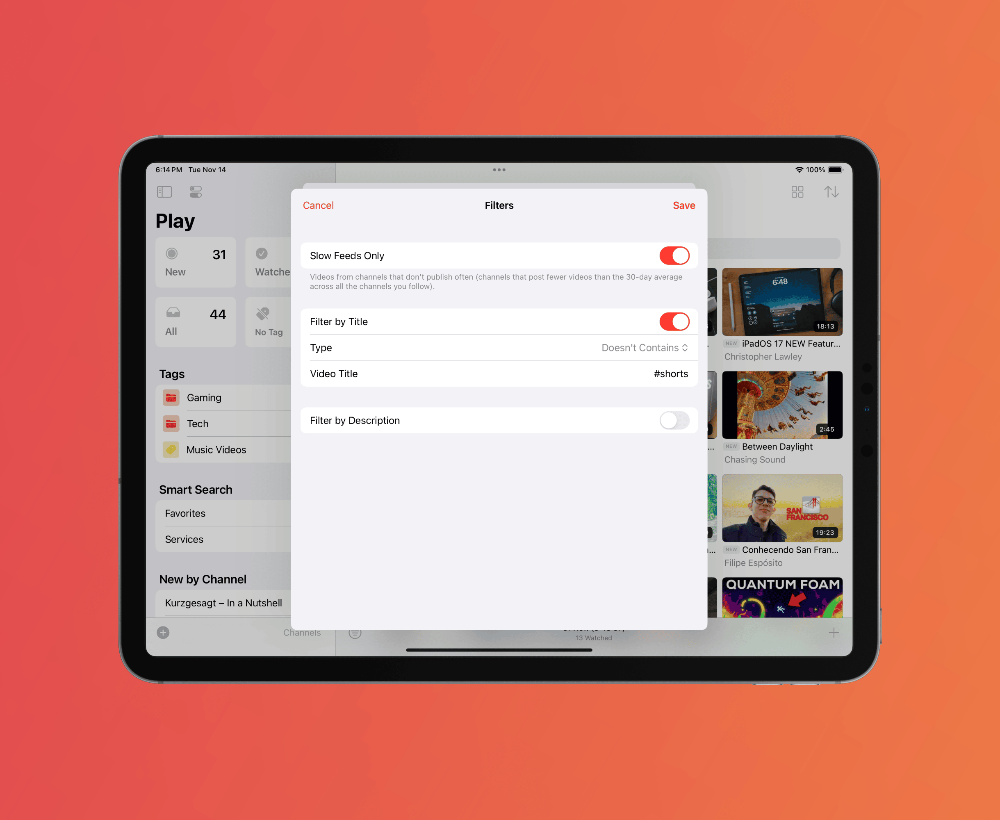
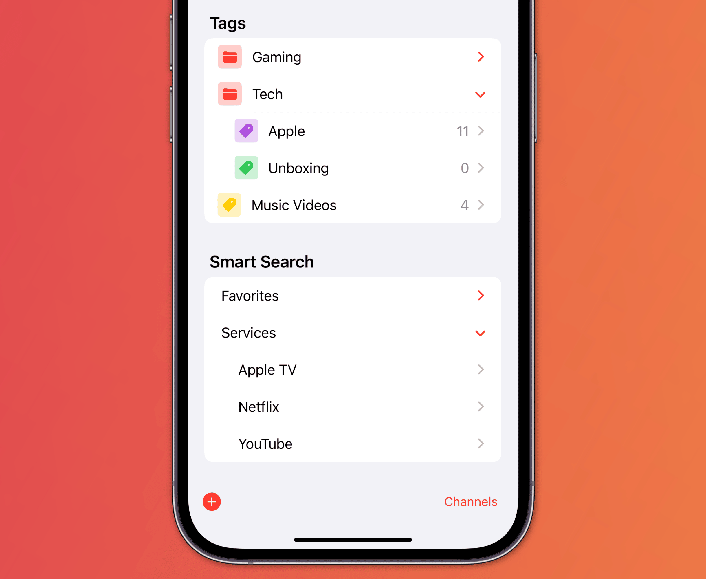

What's New in Play 2.0
Play 2.0 introduces some of the most requested features since version 1.0. In addition to saving and organizing videos for later, Play now allow users to follow YouTube channels and get new videos as they're released. Along with the ability to watch videos in-app, it evolves Play into a complete YouTube hub for collecting, organizing, and enjoying videos.
You will also be able to organize Tags and Smart Search into folders, watch supported YouTube videos in-app, and experience many UI and navigation improvements on the Mac.
Play 2.0 also introduces Play Premium, a subscription designed for features that extend Play's capabilities beyond saving videos for later. Read on to learn more about all the changes and new features:
Follow Channels
You can now follow YouTube channels and get new videos as they're released, save the ones you want to watch, and delete the rest. It integrates harmoniously with the existing feature set, allowing you to have a complete YouTube experience within the app.

Channels can be added by either pasting or sharing their URL, manually by entering the necessary details, or through automated processes using Shortcuts actions. New videos are shown in the Inbox view with a reverse chronological order, and you can swipe or touch and hold to save for later or delete.

Powerful filters are also available, making it easy for you to stay updated with new videos from various channels.

Organize With Folders
Play 2.0 supports a deeper level of organization with folders for Tags and Smart Searches, allowing you to group similar items for a more structured and efficient navigation.

Watch In-App
Play on iOS and iPadOS already supported watching videos in-app using the native system player. And now this feature is being extended to the Mac for the first time. You'll be able to watch supported YouTube videos directly in the video details panel or in a new separate window.
Channels and Folders are the first two features to be included in Play Premium, a subscription designed for features that extend Play's capabilities beyond saving videos for later. Play Premium brings a more sustainable business model to the app, allowing me to implement advanced new features and ensure the app's long-term development.
With the new subscription, Play prices and features are updated as follows:
| Play Basic | Play Premium | |
|---|---|---|
| Price | $2.99 (single purchase) | $2.99/mo or $19.99/yr or $99.99 (single purchase) |
| Add Videos | ✔ | ✔ |
| Watch In-App | ✔ | ✔ |
| Follow Channels | ✔ | |
| Add Tags | ✔ | ✔ |
| Auto-Tagging | ✔ | ✔ |
| Smart Search | ✔ | ✔ |
| Tag Folders | ✔ | |
| Smart Search Folders | ✔ | |
| App Shortcuts | ✔ | ✔ |
| Customization Options | ✔ | ✔ |
| iCloud Sync | ✔ | ✔ |
Additional Features and Improvements
Play 2.0 also includes these additional features and improvements:
- The large widget now shows 12 videos when configured with the ‘Minimal UI’ option.
- Added a button to open the main app when adding a video from the Share Sheet.
- The in-app player now starts the video according to the ‘Start At’ attribute.
- Added a status indicator for iCloud sync in the bottom-right of the sidebar on macOS.
- Streamlined navigation on macOS by opening associated elements in sheets within the same window, rather than launching multiple new windows.
Price and Availability
Play 2.0 will be available as a free update on November 28, 2023. New users can buy the basic version with a one-time purchase of $2.99 for all platforms.
The new Channels and Folders features are available in Play Premium, a subscription that costs $2.99/month, $19.99/year, or $99.99 as a single purchase.